Loading, please wait...
Toggle Controls
Texture Controls
Bark Texture:
Bark Texture 1
Bark Texture 2
Leaves Texture:
Leaves Texture 1
Leaves Texture 2
Leaves Texture 3
Tree Size:
0.05
Position X:
0
Position Y:
0
Position Z:
0
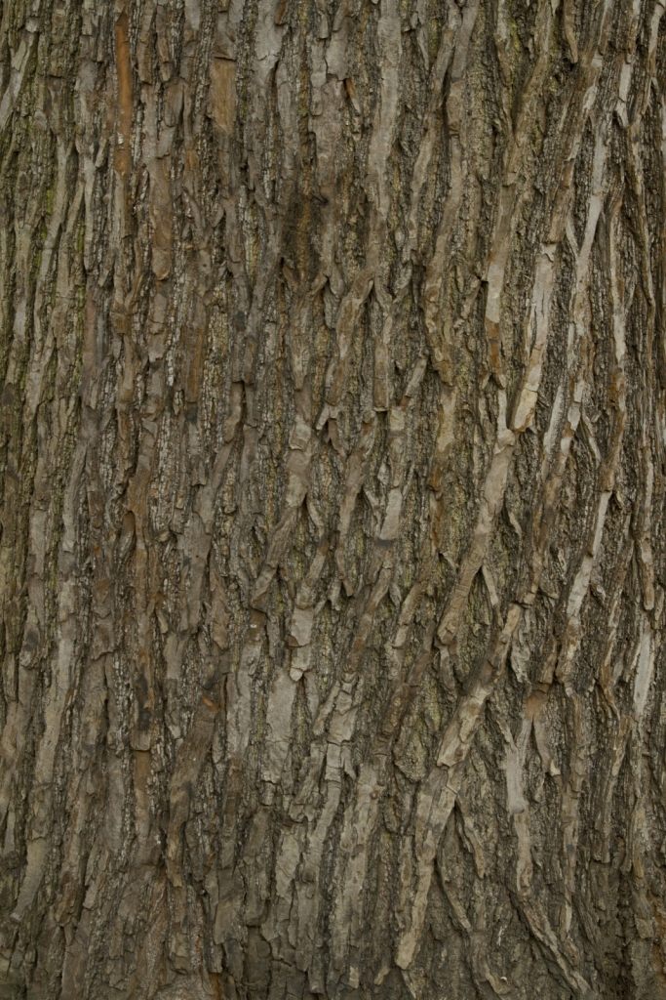 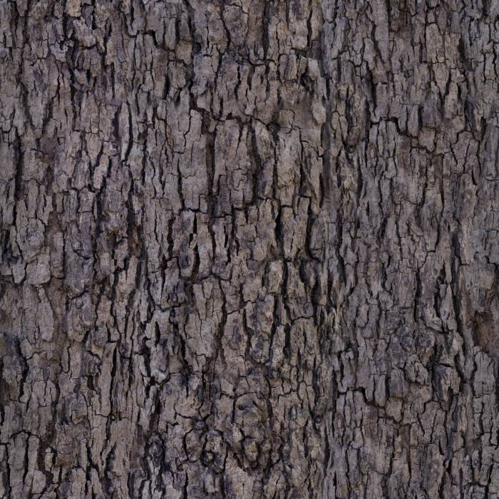
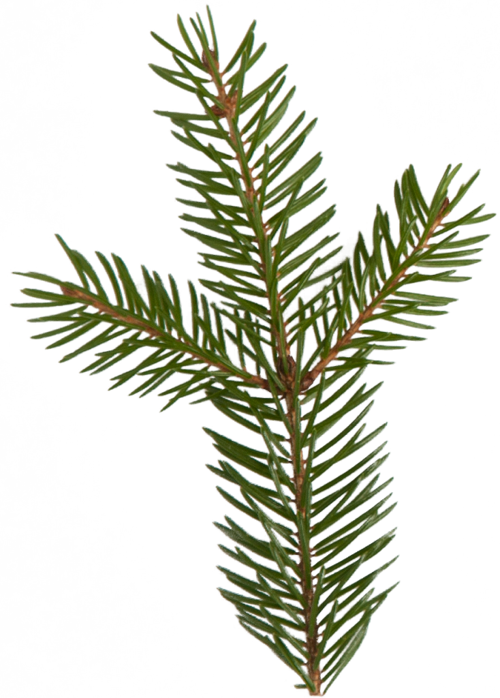 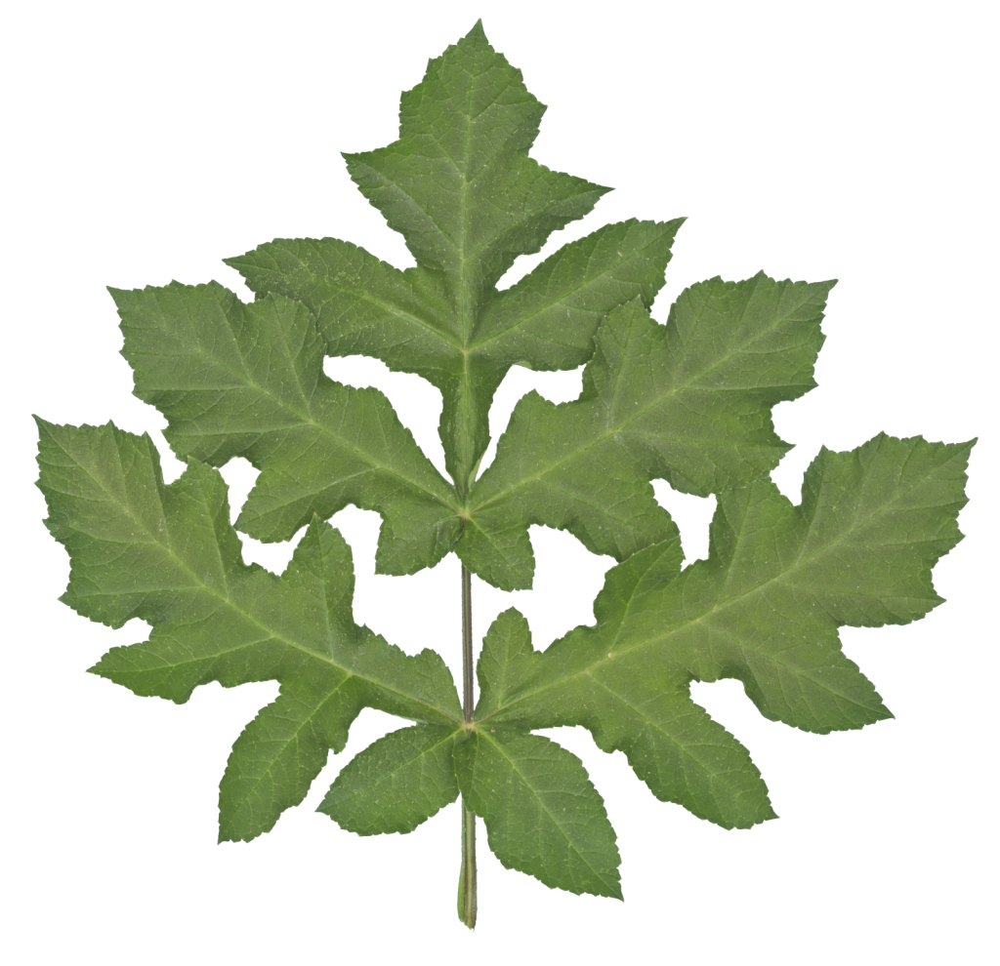
 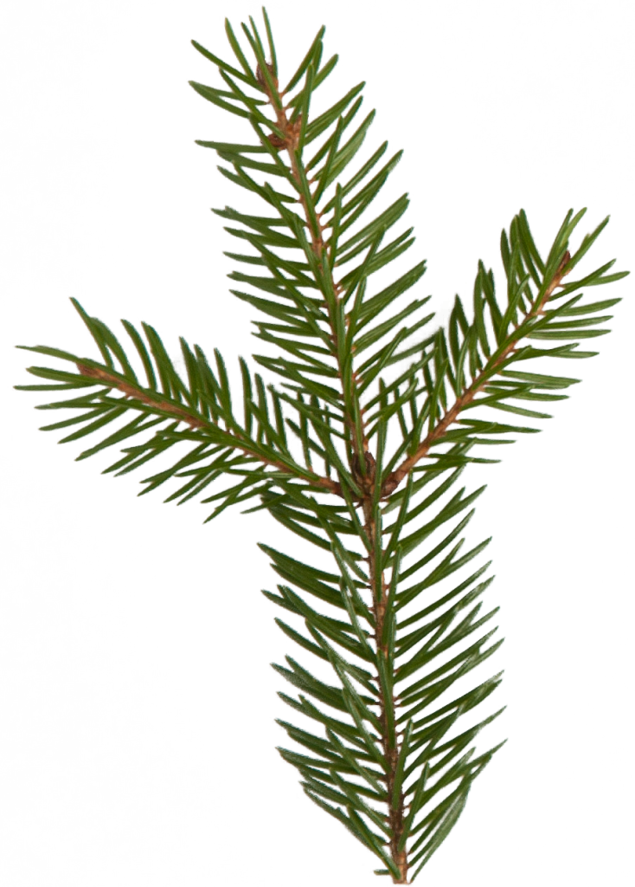
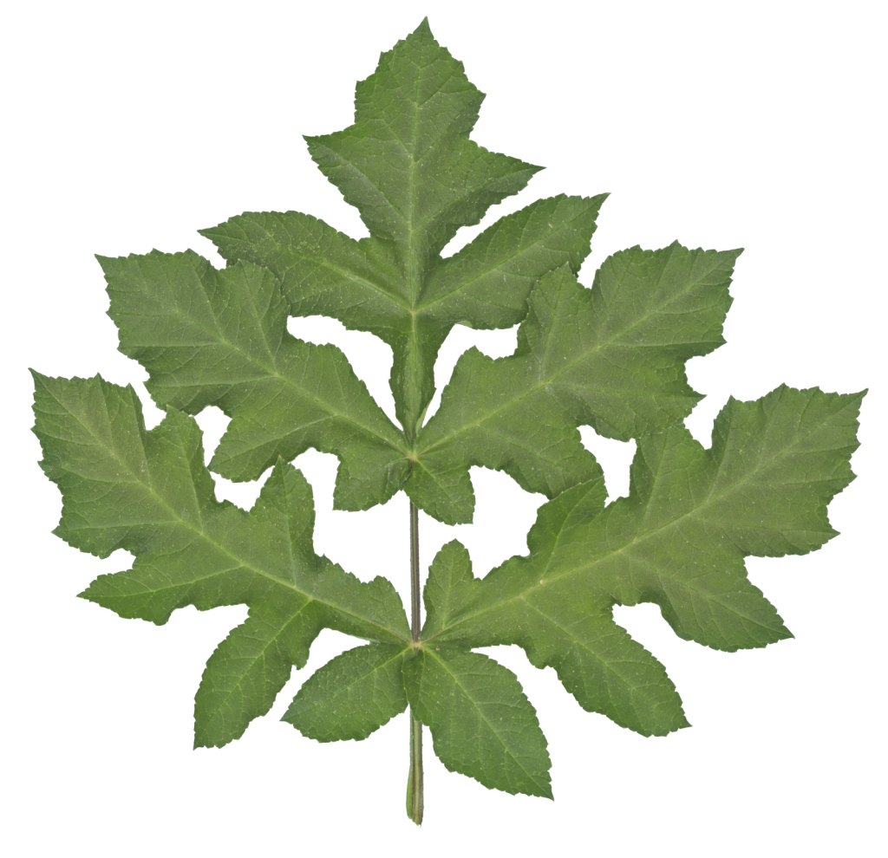
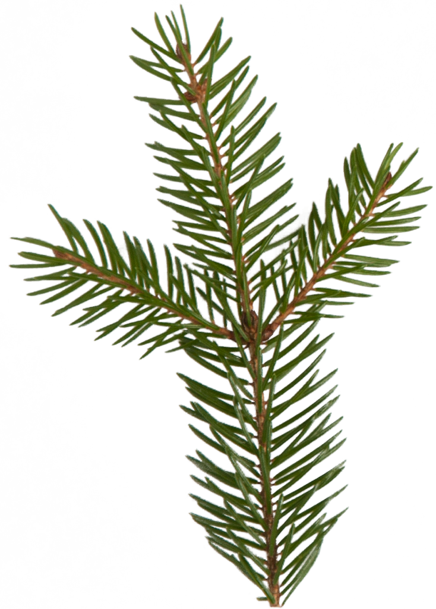
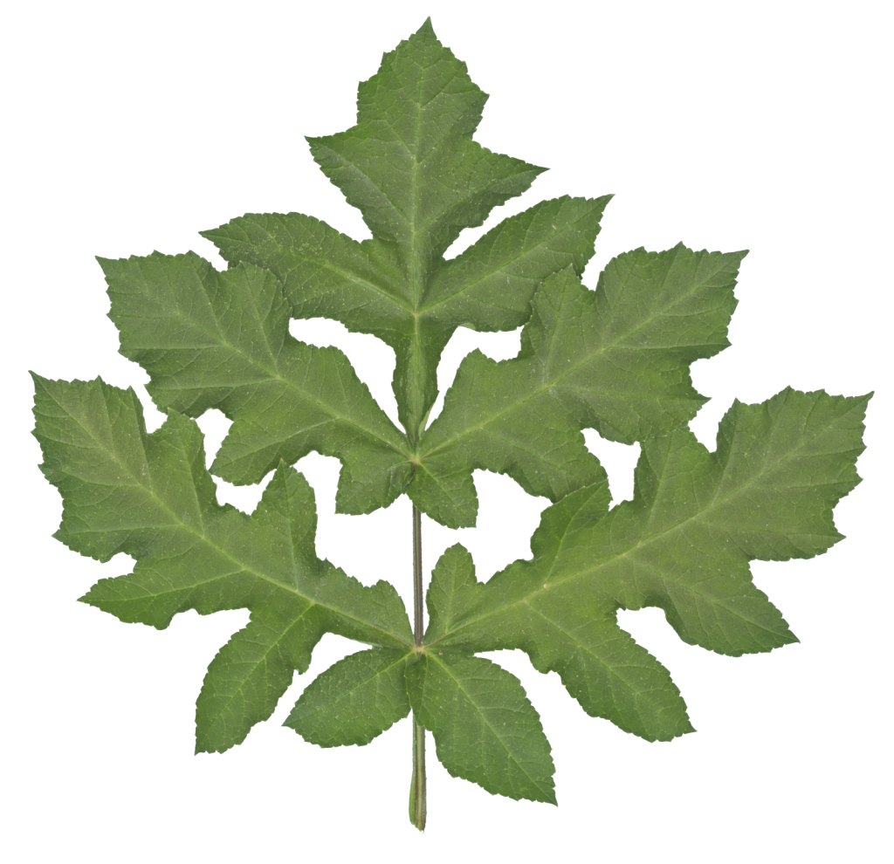
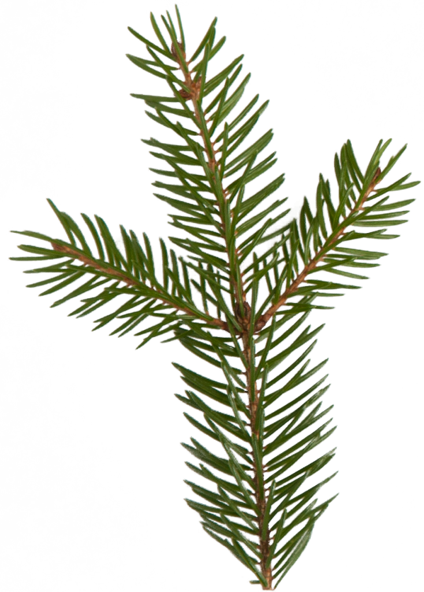
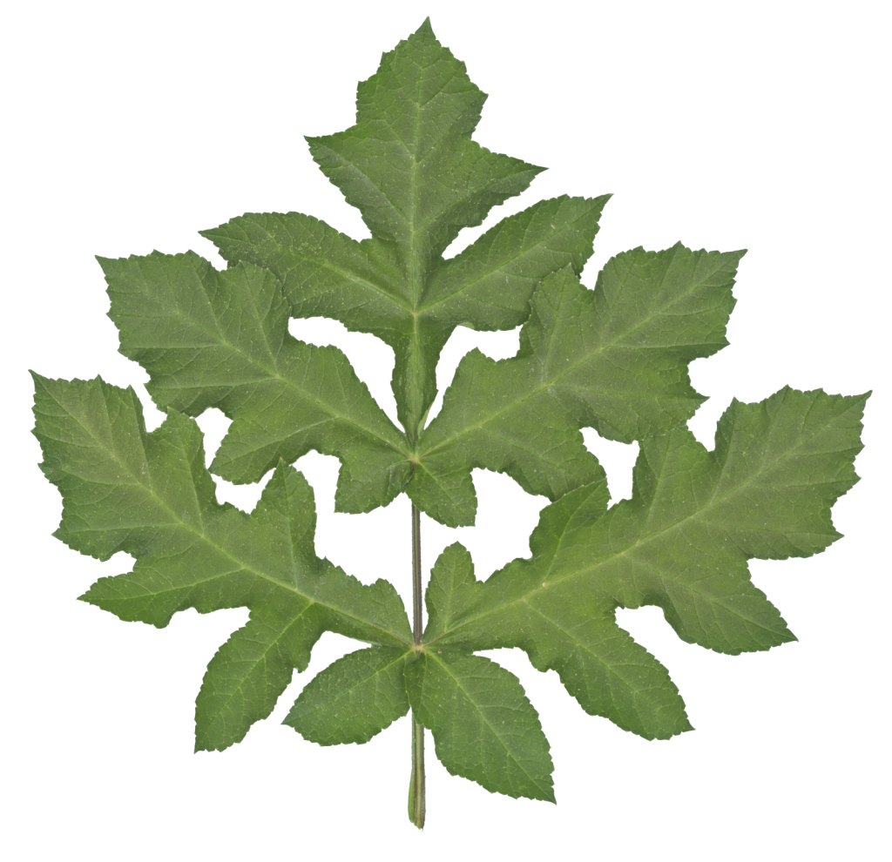
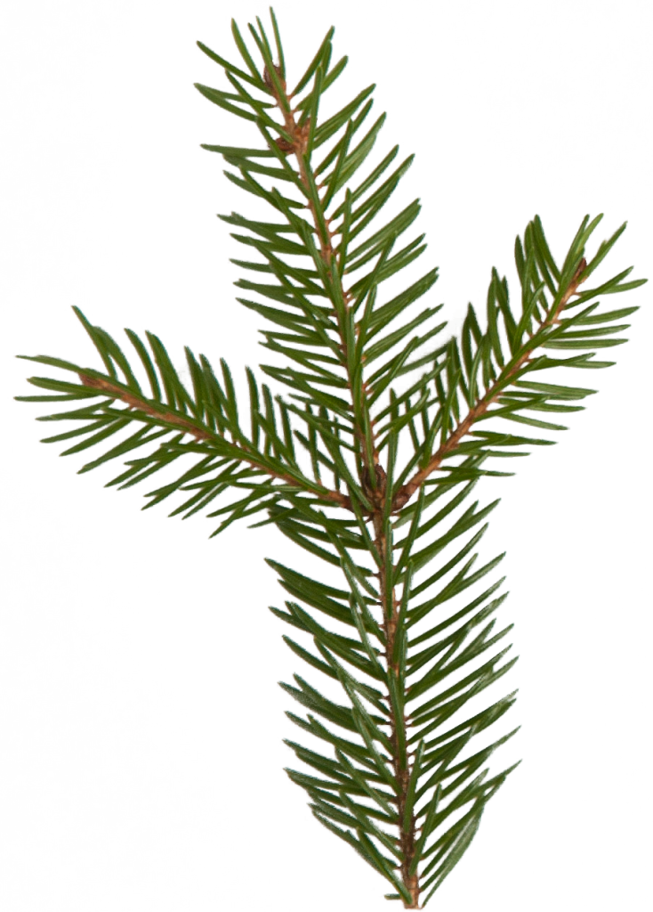
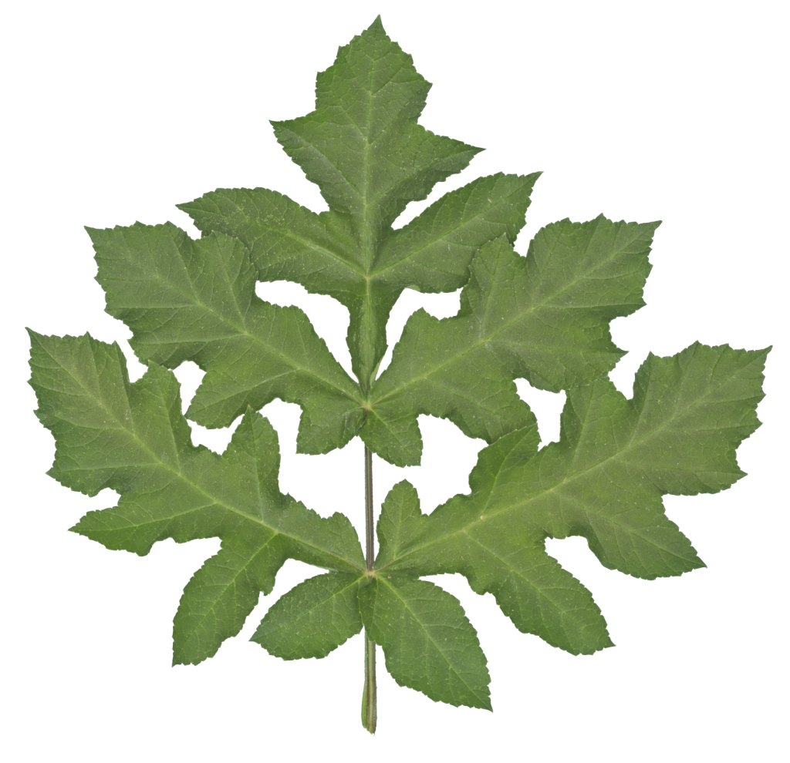